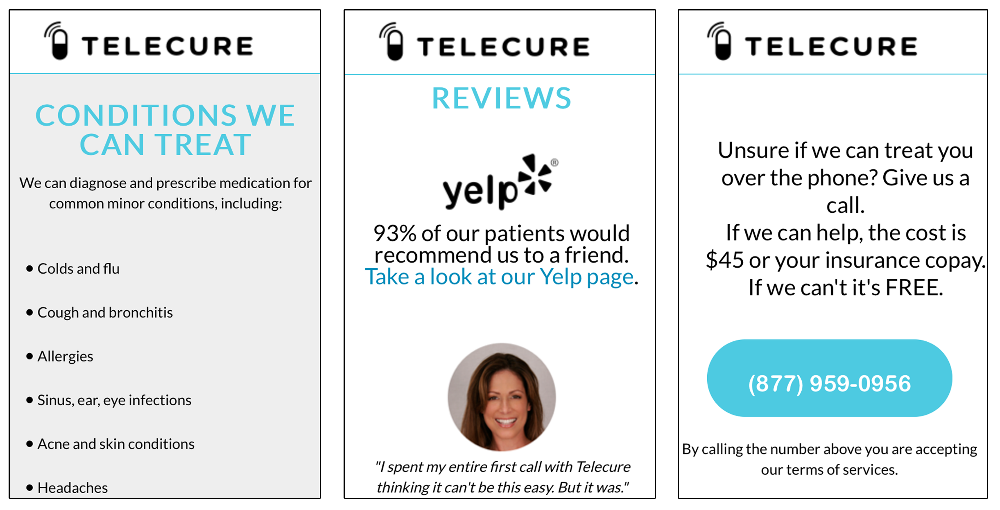
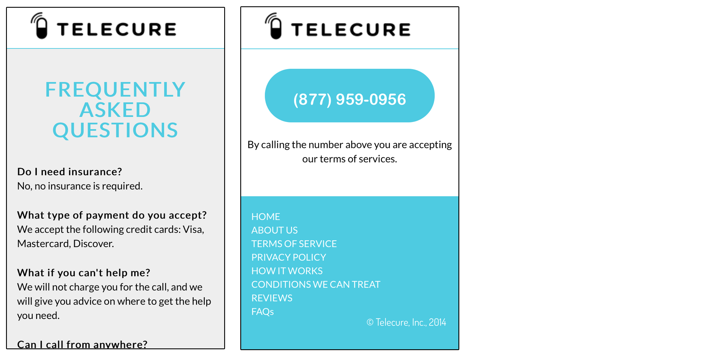
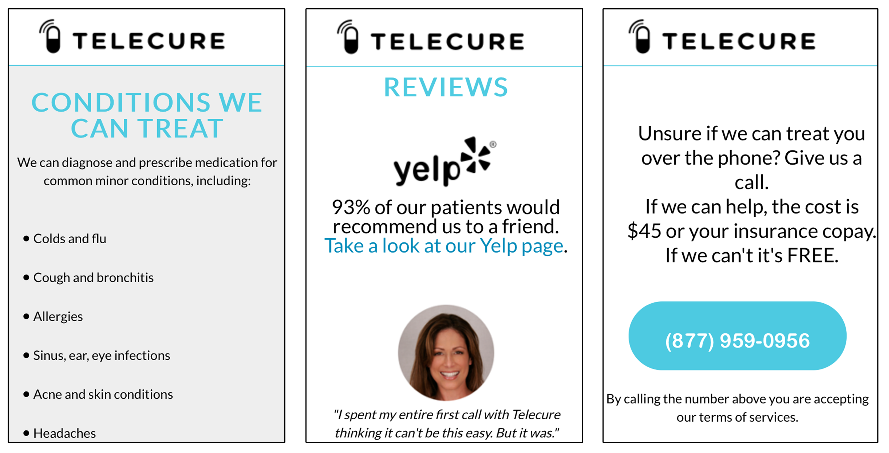
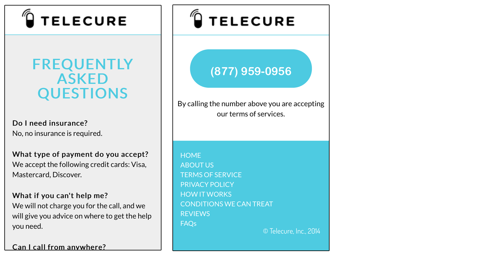
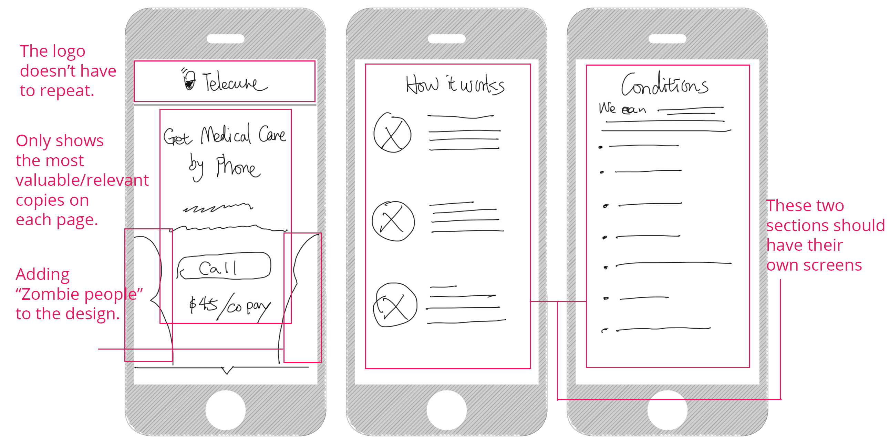

Mobile First - Web Design for Telecure
Telecure is a telemedicine company that treats common conditions over the phone.
Problem
Telecure's landing page is not working very well on mobile devices. Today, almost 1/4 of the Web's traffic comes from mobile. If Telecure didn't build a responsive site, they are losing a quarter of their users.
Project
This project is to improve the existing Telecure landing page (up until July, 2014). The landing page is not mobile responsive and is not optimized.
Key Pain Points:
• Website design/style is not consistent
• Font sizes/leadings make it harder for users to read/understand
• Unnecessary space with no information given
• Unclear value proposition
• Content is not optimized for mobile users
• Website is not trustworthy enough
The old Telecure Landing Page
Desktop Version
I highlighted some of the parts that need to be optimized or removed.

Mobile Version
 



As you can see, their old landing page really needs to be optimized.
Mobile First
The challenge here is to avoid as many differences as possible as the widths of the devices change. I want to aim for a beautiful user experience for all of them.
My Role
My goal here is to tackle all the major pain points listed above and to improve the overall Telecure website experience. I researched, wireframed and re-designed the website. I tried to maintain their original design framework as requested by the client.
Telecure also decided to use "zombie people" (shown below) in their design, and I was asked to apply these characters. I also added a page for their new iOS app.

Who Am I Designing For?
There are mostly 3 types of people Telecure is targeting at.
• People who do not have insurance and have difficulty accessing any doctors;
• People who do have insurance but they are in a rush (for example, traveling) and cannot wait long to make appointments with doctors;
• People with insurance who do not mind spending some money to save themselves some time.
They also share one thing in common - they all need trustworthy medical help fast. So the Telecure website really should be able to offer the information they need so they can be convinced.
Start From Sketches
I started to sketch some of the key screens. The idea is to keep the website consistent through out each section.


Style Guide
Once I have the rough idea of how the website should go, I started to develope a rough style guide. It helps keep the design consistent. I discussed this with the developer and we agreed on the brand colors. From there, I developed the style guide as shown below.(I also referenced this website for Typography advices.

Mobile Design
After the wireframes, I started to design the high-fidelity prototypes. Using the style guide, I was able to keep the design consistent. I believe that the pain points I listed earlier were all solved with this design. The final version was shown to the clients and they were happy with it :)
This is what it looks like on different devices as shown below.
iPhone 5/5s


iPad samples

Desktop version
As you can see, while the width of the device increases, the content change slightly. More "zombie people" are added to the background. "How it works" expanded into one line, etc.